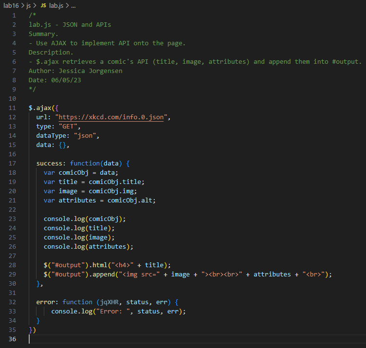

Lab 16: JSON and APIs
Challenge
Use both JSON and API in order to take data from an endpoint and put it on a page.
Problems
Had to install CORS Unblock in order to test locally, due it throwing a block error. Additionally had to seperate title and alt attributes from image, displaying them all seperately, in order for the image to load.
Results
The title, image, and alt for XKCD's comic "Marble Run" is shown below.
JavaScript Output
Endpoint data shown in Chrome. It includes data that would transfer into comicObj.
The JavaScript used for Lab 16, a combination of the provided recipe and what was used in Lab 15. Notably, $.ajax provides three pieces of data (title, image, attributes), which is then transferred into #output.
Local test of the HTML and JavaScript. Displays the title, image, and alt of XKCD's comic "Marble Run".
The live site of Lab 16 page. It mirrors the local page and throws no errors.